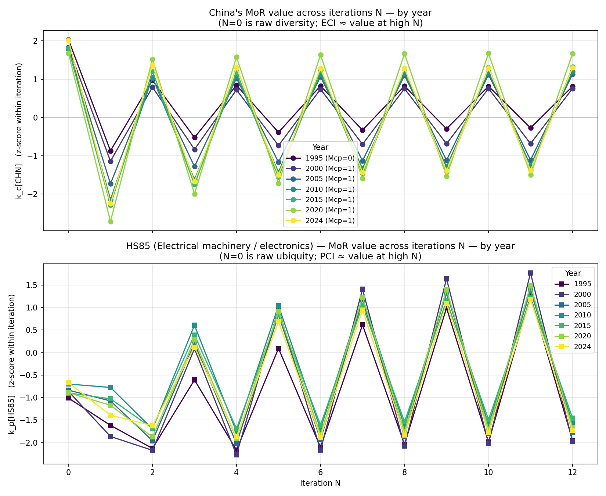
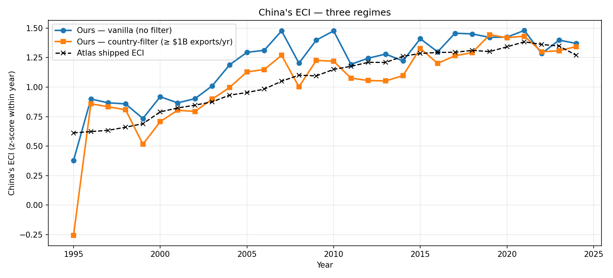

# Illustrative implementation — RCA, Mcp, and the eigendecomposition.
import numpy as np, pandas as pd
df = pd.read_csv("hs92_country_product_year_2.csv",
dtype={"product_hs92_code": str})
def compute_mcp_for_year(df_year, min_country_total=0.0):
# Country filter (drop tiny exporters)
country_totals = df_year.groupby("country_iso3_code")["export_value"].sum()
qualifying = country_totals[country_totals >= min_country_total].index
df_year = df_year[df_year["country_iso3_code"].isin(qualifying)]
# Balassa RCA
c_tot = df_year.groupby("country_iso3_code")["export_value"].sum()
p_tot = df_year.groupby("product_hs92_code")["export_value"].sum()
w_tot = df_year["export_value"].sum()
d = df_year.copy()
d["c_tot"] = d["country_iso3_code"].map(c_tot)
d["p_tot"] = d["product_hs92_code"].map(p_tot)
d["rca"] = (d["export_value"] / d["c_tot"]) / (d["p_tot"] / w_tot)
d["mcp"] = (d["rca"] >= 1).astype(int)
M = d.pivot(index="country_iso3_code", columns="product_hs92_code",
values="mcp").fillna(0).astype(int)
d_c = M.sum(axis=1); u_p = M.sum(axis=0)
# Drop countries with no qualifying products
M = M.loc[d_c[d_c > 0].index, u_p[u_p > 0].index]
return M, M.sum(axis=1), M.sum(axis=0)
def eci_pci(M, d_c, u_p):
M_np = M.values.astype(float)
W_c = (1.0/d_c.values[:, None] * M_np) @ (1.0/u_p.values[:, None] * M_np.T)
W_p = (1.0/u_p.values[:, None] * M_np.T) @ (1.0/d_c.values[:, None] * M_np)
# Second-largest eigenvector of each
ev_c, vec_c = np.linalg.eig(W_c)
ev_p, vec_p = np.linalg.eig(W_p)
eci_raw = vec_c[:, np.argsort(-ev_c.real)[1]].real
pci_raw = vec_p[:, np.argsort(-ev_p.real)[1]].real
# Standardise
eci = (eci_raw - eci_raw.mean()) / eci_raw.std()
pci = (pci_raw - pci_raw.mean()) / pci_raw.std()
return pd.Series(eci, index=M.index), pd.Series(pci, index=M.columns)Summary. The Method of Reflections is, mathematically, an eigendecomposition of a normalised country-product trade matrix; it ranks countries and products by recursive sophistication, and at HS2 resolution it reproduces the qualitative findings of the original paper — but it has two well-known failure modes that change the story for both the smallest and the very largest exporters.
In 2009 César Hidalgo and Ricardo Hausmann published a paper in PNAS with a provocative idea: you can read what an economy knows how to make from the structure of its exports alone, and a simple iterative scheme on the country-product matrix recovers a meaningful ranking. The construct they introduced — the Economic Complexity Index — has since become a small industry.
What follows takes the method apart and re-builds it from scratch on real trade data. The maths is two equations; the implementation is forty lines of pandas and NumPy. The interesting parts are the empirical residuals — where the algorithm agrees with intuition, where it doesn’t, and what those discrepancies tell us about both economies and the algorithm.
The case study throughout is China. There’s a clean story to tell: between 1995 and 2010 China’s complexity ranking roughly doubled, and the iteration itself explains how — not because China entered new sectors, but because the sectors it specialised in shifted from textiles to machinery to electronics.
1. The basic idea
What does it mean for an economy to be “complex”? Plenty of intuitive proxies — GDP per capita, value-added per worker, R&D intensity — work fine for the obvious cases (Switzerland complex, Chad not), but they don’t generalise well: a high-income oil exporter has lots of value-added per worker but is doing exactly one thing.
Hidalgo & Hausmann’s move is to look at the structure of what a country exports, not the headline numbers. The intuition has two pieces:
- Diversity. A complex economy can make many different things; a simple one can make few.
- Ubiquity. Some products can be made by almost anyone (clothing, basic agricultural goods). Others require knowledge that very few countries have (aircraft, lithography equipment). A complex economy is one that does the rare things.
These two ideas pull in opposite directions when used naively. Many countries have high diversity of common products; very few countries have low diversity of rare ones. The Method of Reflections is the iteration that resolves this tension into a single ranking.
2. The matrix and the iteration
Start with bilateral trade data: country c exports value \(x_{cp}\) of product \(p\) in some reference year. Define Revealed Comparative Advantage (Balassa 1965) as:
\[ \mathrm{RCA}_{cp} \;=\; \frac{x_{cp} / \sum_{p'} x_{cp'}}{\sum_{c'} x_{c'p} \; / \; \sum_{c',p'} x_{c'p'}} \]
In words: \(\mathrm{RCA}_{cp}\) is country c’s share of product p’s world exports, divided by country c’s share of all world trade. If country c specialises in product p more than its overall trade footprint would predict, \(\mathrm{RCA}_{cp} > 1\).
Binarise to get the specialisation matrix:
\[ M_{cp} \;=\; \mathbb{1}\{\mathrm{RCA}_{cp} \geq 1\} \]
This is the only place magnitude is collapsed into a yes/no. From \(M\) we get diversity and ubiquity directly as row and column sums:
\[ k_{c,0} \;=\; \sum_p M_{cp} \quad\text{(diversity of }c\text{)}, \qquad k_{p,0} \;=\; \sum_c M_{cp} \quad\text{(ubiquity of }p\text{)}. \]
The Method of Reflections refines these by iteratively averaging each side against the other:
\[ k_{c,N} \;=\; \frac{1}{k_{c,0}} \sum_p M_{cp}\, k_{p,N-1} \] \[ k_{p,N} \;=\; \frac{1}{k_{p,0}} \sum_c M_{cp}\, k_{c,N-1} \]
The semantics shift at every step. At \(N{=}1\), \(k_{c,1}\) is “the average ubiquity of my products” — high if I export common things, low if I export rare ones. At \(N{=}2\), \(k_{c,2}\) is “the average diversity of the countries that make my products” — high if my products are made by economies that themselves make many things. Continue this and the iteration converges; the Economic Complexity Index is the converged \(k_c\) (z-scored), the Product Complexity Index is the converged \(k_p\) (z-scored).
The method is recursive co-clustering. It treats the trade matrix as a bipartite graph between countries and products, and each iteration is one round of belief propagation: countries pass diversity messages to their products; products pass ubiquity messages back. ECI is the steady-state of this message-passing.
3. From iteration to eigenvector
The iteration has a closed form. Stack the country values into the country-side similarity matrix:
\[ W_c \;=\; D_c^{-1}\, M\, D_p^{-1}\, M^\top \]
where \(D_c\) and \(D_p\) are diagonal matrices of diversity and ubiquity. Then \(k_{c,N+2} = W_c\, k_{c,N}\), so iterating the Method of Reflections is the same as repeatedly multiplying by \(W_c\).
\(W_c\) is row-stochastic (its rows sum to 1, by construction), so its largest eigenvalue is exactly 1 and its largest eigenvector is the constant vector. The second eigenvector carries the only useful structure — the relative positions of countries within the second-largest eigendirection. That eigenvector, standardised to mean zero and unit variance, is the Economic Complexity Index.
Symmetrically, \(W_p = D_p^{-1} M^\top D_c^{-1} M\) gives PCI as its second eigenvector.
This is PCA’s cousin. ECI is to a normalised trade-similarity matrix what the second principal component is to a centred covariance matrix: the eigendirection that maximally separates the rows. The dominant component carries no information (it’s constant); the second carries everything.
4. Implementing it
Forty lines of pandas, give or take. Load the Atlas HS92 country × HS2 × year trade data, compute RCA, binarise, build \(W_c\) and \(W_p\), take their second eigenvectors:
Validation: the Atlas of Economic Complexity ships its own ECI per country-year and PCI per product-year. Both should match a clean implementation up to a sign flip (eigenvectors are defined up to sign) and a standardisation convention. Run this across 30 years (1995–2024) and we get:
| Regime | Mean ECI–Atlas correlation | Mean PCI–Atlas correlation | Mean # of countries in Mcp |
|---|---|---|---|
| Vanilla (RCA ≥ 1, no filter) | 0.72 | 0.7 | 225 |
| Country-filtered (RCA ≥ 1, total exports ≥ $1B/yr) | 0.78 | 0.71 | 153 |
A few things to notice. First, no implementation of the linear Method of Reflections at HS2 resolution will match Atlas to numerical precision, because Atlas’s published ECI is computed at HS4 (~1240 product categories) and uses a non-linear refinement (Tacchella et al. 2012) — more on that in section 7. A ~0.72 correlation on the linear, HS2 version is what the paper-canonical algorithm produces. Second, the country filter helps a lot in recent years and modestly in older ones; we’ll see why in section 6.
For context, the top 15 countries by ECI in 2022 under the country-filtered regime are:
| Country | ISO | Our ECI (z-score) | Atlas ECI |
|---|---|---|---|
| Taiwan | TWN | 2.78 | 1.84 |
| Japan | JPN | 2.28 | 1.99 |
| South Korea | KOR | 2.16 | 1.77 |
| Hong Kong | HKG | 2.1 | 1.33 |
| Germany | DEU | 2.09 | 1.52 |
| Switzerland | CHE | 1.88 | 1.75 |
| Czech Republic | CZE | 1.88 | 1.46 |
| Singapore | SGP | 1.8 | 1.65 |
| Slovenia | SVN | 1.63 | 1.34 |
| Ireland | IRL | 1.5 | 1.3 |
| United Kingdom | GBR | 1.44 | 1.4 |
| Mexico | MEX | 1.36 | 0.91 |
| China | CHN | 1.3 | 1.36 |
| Austria | AUT | 1.29 | 1.36 |
| Slovakia | SVK | 1.26 | 1.21 |
The qualitative agreement with Atlas is very strong — Taiwan, Japan, Korea, Germany, Switzerland are the canonical “complex economies” of the trade literature, and they’re at the top under both implementations.
5. China × HS85: tracing the iteration
The empirical headline of the original paper was that high-ECI economies grow faster than their income would predict. China is the most-cited example: ECI rising sharply 1995–2010, GDP per capita following with a lag. Let me trace that rise mechanistically using the iteration values, picking one specific product to track alongside.
China’s biggest manufactured export in 2024 is HS85 — electrical machinery and electronics (27.9% of world exports of HS85 originated in China). Tracking \(k_c[\text{CHN}]\) and \(k_p[\text{HS85}]\) across iterations and years, here’s what happens to the key inputs:
| Year | # countries in Mcp | Diversity(CHN) = k_c,0 | Ubiquity(HS85) = k_p,0 | Mcp[CHN, HS85] | k_c[CHN]_z at N=10 (≈ ECI) | k_p[HS85]_z at N=10 (sign-flipped, ≈ PCI) |
|---|---|---|---|---|---|---|
| 1995 | 109 | 46 | 15 | 0 | 0.82 | 1.99 |
| 2000 | 117 | 45 | 18 | 1 | 0.76 | 2.02 |
| 2005 | 136 | 44 | 20 | 1 | 1.12 | 1.8 |
| 2010 | 145 | 44 | 23 | 1 | 1.19 | 1.6 |
| 2015 | 150 | 43 | 20 | 1 | 1.3 | 1.49 |
| 2020 | 154 | 41 | 20 | 1 | 1.68 | 1.7 |
| 2024 | 155 | 47 | 24 | 1 | 1.29 | 1.77 |
Three observations:
- China’s raw diversity barely moves. 46 sectors in 1995, 47 in 2024. The number of HS2 chapters China specialises in is essentially flat over the entire period.
- HS85 ubiquity rises: 15 countries in 1995 → 24 in 2024. More countries entered electronics over the period.
Mcp[CHN, HS85]flipped from 0 to 1 between 1995 and 2000. China didn’t have RCA in electrical machinery in 1995; it did from 2000.
If you stopped at the raw counts, the obvious story would be “China stayed at the same complexity; HS85 got less exclusive”. Both wrong. Look at iteration \(N{=}1\) specifically:
| Iteration N | 1995 k_c[CHN]_z | 2024 k_c[CHN]_z | 1995 k_p[HS85]_z | 2024 k_p[HS85]_z |
|---|---|---|---|---|
| 0 | 2.03 | 2.03 | -1.01 | -0.67 |
| 1 | -0.87 | -2.25 | -1.62 | -1.39 |
| 2 | 0.98 | 1.37 | -2.13 | -1.62 |
| 3 | -0.52 | -1.68 | -0.61 | 0.12 |
| 4 | 0.84 | 1.31 | -2.17 | -1.87 |
| 5 | -0.39 | -1.5 | 0.09 | 0.69 |
| 6 | 0.83 | 1.29 | -2.1 | -1.88 |
| 7 | -0.33 | -1.43 | 0.62 | 0.95 |
| 8 | 0.82 | 1.29 | -2.04 | -1.83 |
| 9 | -0.3 | -1.4 | 0.99 | 1.09 |
| 10 | 0.82 | 1.29 | -1.99 | -1.77 |
| 11 | -0.27 | -1.38 | 1.26 | 1.18 |
| 12 | 0.81 | 1.3 | -1.95 | -1.73 |
The iteration alternates between “averaging the ubiquity of my products” (odd \(N\), \(k_c\) row) and “averaging the diversity of my products’ countries” (even \(N\)). In 1995, China’s \(k_{c,1}\) value is z-score \(-0.87\) — its products are slightly below the global mean of ubiquity. By 2024, \(k_{c,1}\) is \(-2.25\) — China’s products are much rarer than average. That single number is the whole story.
Concretely: in 1995, China specialised in textiles, apparel, and basic manufactured goods — the kind of products that 30+ other countries also export with RCA. By 2024, China’s basket still includes those, but also HS84 (machinery), HS85 (electronics), HS86 (railway equipment), HS90 (instruments). These are products only 15–25 countries specialise in. The composition shift — not the count — is what drives the iteration deeper into the “low ubiquity” direction.
By iteration \(N{=}10\), this has compounded through the recursive structure (“rare products of countries that themselves make rare products”) and China’s complexity z-score has climbed from \(+0.82\) to \(+1.29\), with a peak of \(+1.68\) around 2020.
China’s rise in ECI is not diversification — it’s substitution. The algorithm doesn’t reward China for entering many new sectors (it didn’t); it rewards the shift in what it specialises in. A single bit flip (\(M_{\text{CHN}, \text{HS85}} = 0 \to 1\)), repeated across a handful of similar sectors, propagates through the recursion into a near-doubling of the complexity z-score. That is what the Method of Reflections is for: turning the identity of co-specialisations into a continuous quantity.
The full iteration trajectory across years:

And the resulting ECI trajectory for China, against Atlas’s shipped values:

The vanilla and country-filtered curves diverge in the 2005–2015 window — that’s the period where the vanilla algorithm starts amplifying micro-state noise (next section).
6. Where it bends and where it breaks
The two failure modes the original paper does not address. Both are intrinsic to the Balassa-RCA-plus-binarisation construction.
Failure mode 1: micro-state amplification
The vanilla top-15 in 2022 (no country filter):
| Country | Population (approx.) | Our ECI | Atlas ECI |
|---|---|---|---|
| Tokelau | 1,500 | 3.06 | 0.97 |
| Taiwan | 23M | 2.47 | 1.84 |
| Japan | 125M | 1.98 | 1.99 |
| Hong Kong | 7.5M | 1.96 | 1.33 |
| South Korea | 52M | 1.9 | 1.77 |
| S. Georgia & Sandwich Islands | 30 | 1.8 | 0.65 |
| Germany | 84M | 1.77 | 1.52 |
| Andorra | 80k | 1.76 | 1.13 |
| Czech Republic | 10.5M | 1.65 | 1.46 |
| Cocos Islands | 600 | 1.59 | 1.4 |
| Bouvet Island | 0 | 1.57 | 0.51 |
| Vatican City | 800 | 1.56 | 0.97 |
| Switzerland | 8.7M | 1.52 | 1.75 |
| Singapore | 5.6M | 1.47 | 1.65 |
| Niue | 1,600 | 1.45 | 1.11 |
Tokelau (population 1,500), Bouvet Island (uninhabited), Vatican City — these aren’t credible “complex economies”; they’re algorithmic artefacts. They appear because vanilla RCA is permissive: a tiny exporter only needs to capture a tiny share of world exports of some product to qualify as “specialised” in it. Bouvet Island shipping a single container of a niche good in one year is enough to push its RCA above 1 for that product.
The Method of Reflections then amplifies this: a country with low diversity but very specific specialisations has its complexity boosted by every iteration that asks “what kind of company do your products keep?” — because the products that match the noise tend to be made by complex economies.
The fix that doesn’t work. A first instinct is to add a per-flow filter: require Mcp = 1 only if both RCA ≥ 1 and the country has at least some absolute share (say 1%) of that product’s world exports. This banishes the micro-states from the top, but creates a different bias: it now rewards medium-sized economies that are heavily concentrated in a few large sectors. Bangladesh and Cambodia float to the top because they easily exceed 1% global share in apparel categories — at the expense of small but diverse economies like Switzerland or Slovenia.
The correlation with Atlas’s ECI under this regime drops from 0.72 to 0.29. The filter solved the visible problem and introduced an invisible one.
The fix that works. Apply the filter at the country level instead: drop countries whose total annual exports are below some threshold ($1B is a reasonable starting point) before building \(M\). This eliminates the micro-state noise source cleanly without touching the comparative-advantage mechanism. ECI–Atlas correlation in recent years jumps from 0.72 → 0.81; the top-15 looks like a real complex-economy list (table in section 4).
7. What works better, and where the field went
The micro-state fix from section 6.1 (country-level threshold) is necessary and sufficient for clean rankings on the linear Method of Reflections. The hidden-giant issue is not fixable inside the Balassa + binarisation paradigm — it’s a property of the construction. The follow-up literature has gone in two directions.
Non-linear iterations. Tacchella, Cristelli, Caldarelli, Gabrielli & Pietronero (2012, Scientific Reports) propose a non-linear update that dampens the micro-state amplification algorithmically rather than via a pre-filter. Their “fitness” measure also handles some hidden-giant cases more gracefully because a country’s fitness depends on the complexity of its products in a multiplicative way that doesn’t binarise on RCA in quite the same way.
Higher resolution. The Harvard Atlas computes its canonical ECI at HS4 (~1240 products) rather than HS2 (~97 chapters). At HS4, the hidden-giant problem shrinks: HS85 contains sub-codes like HS8542 (integrated circuits), HS8517 (telephones), HS8528 (monitors) — each its own product. China’s share of HS8542 is much higher than 15.46%, so RCA clears comfortably and Mcp = 1. The micro-state problem also softens at higher resolution, because random products at HS4 are far less likely to hit RCA ≥ 1 spuriously than at HS2.
In other words: the original paper’s algorithm works best on fine product resolution, after country-level filtering, possibly with a non-linear refinement. Each of these three choices is its own research thread.
What I built and what I’d build next
For a reader interested in actually running this — the full pipeline is ~150 lines: data download from Harvard Dataverse, RCA + Mcp + eigendecomposition, validation against Atlas, one figure of China’s iteration trajectory. Total compute is a few seconds on a laptop for the full 30-year × 232-country × 97-product matrix at HS2.
The natural next steps from here, in increasing difficulty:
- Repeat at HS4 to see whether China’s ECI rise looks the same, and to recover the hidden giants. The Atlas ships an HS4 file; the same code reads it after changing one filename.
- Implement the Tacchella et al. (2012) non-linear iteration and compare its rankings with both vanilla MoR and Atlas.
- Replace Balassa with an alternative RCA that doesn’t scale with country size — Hoen & Oosterhaven (2006) propose an additive version. Compare ECI under each.
- Apply the framework to a different question entirely — for example, ranking cities within a country by complexity of their patent applications. The method generalises to any bipartite specialisation matrix.
The deepest takeaway from running this end-to-end is that the Method of Reflections is simple, robust, and computationally trivial — but it requires two non-obvious pre-processing choices to give defensible answers (country filter, fine resolution). The original paper does not flag either of these, and the failure modes you observe without them are not subtle.
Sources
- Hidalgo, C. A., & Hausmann, R. (2009). The building blocks of economic complexity. PNAS, 106(26), 10570–10575. DOI
- Balassa, B. (1965). Trade liberalisation and “revealed” comparative advantage. The Manchester School, 33(2), 99–123.
- Tacchella, A., Cristelli, M., Caldarelli, G., Gabrielli, A., & Pietronero, L. (2012). A new metrics for countries’ fitness and products’ complexity. Scientific Reports, 2, 723.
- Hoen, A. R., & Oosterhaven, J. (2006). On the measurement of comparative advantage. The Annals of Regional Science, 40(3), 677–691.
- Harvard Growth Lab. Atlas of Economic Complexity — International Trade Data (HS, 92). Harvard Dataverse, doi:10.7910/DVN/T4CHWJ, v18.0.